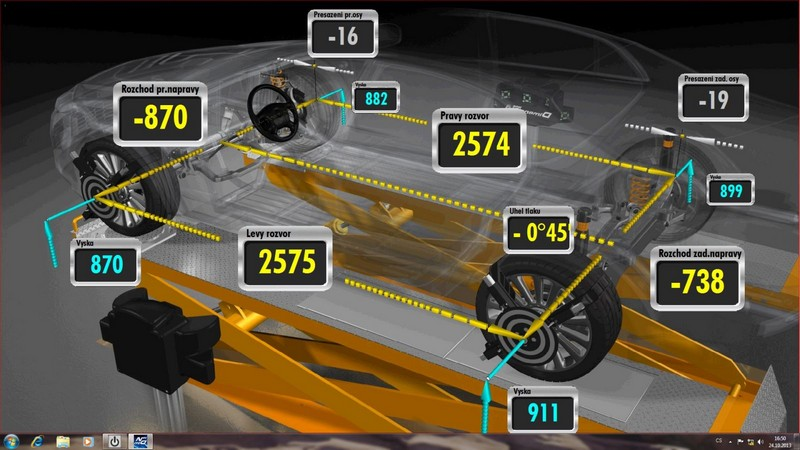
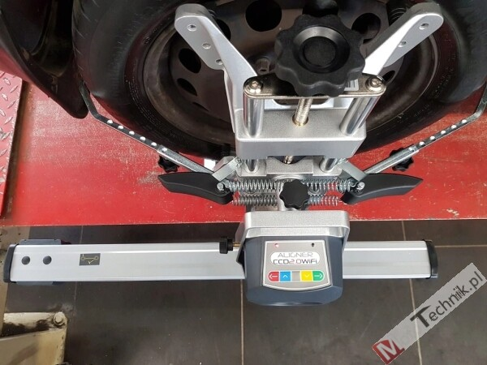
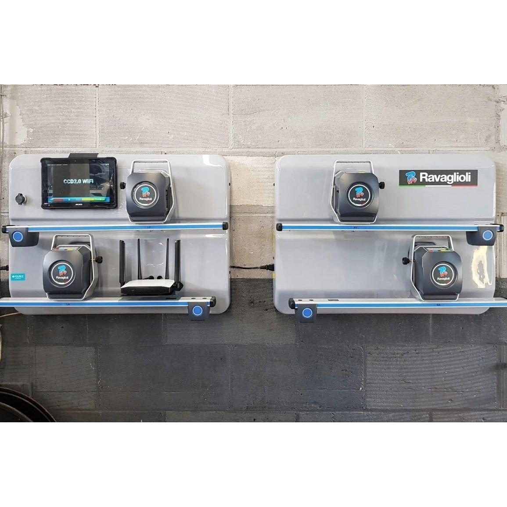
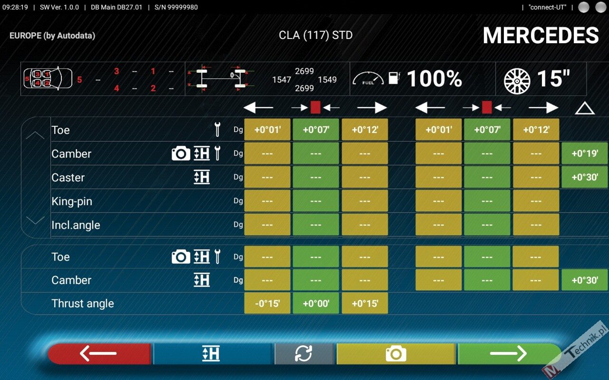
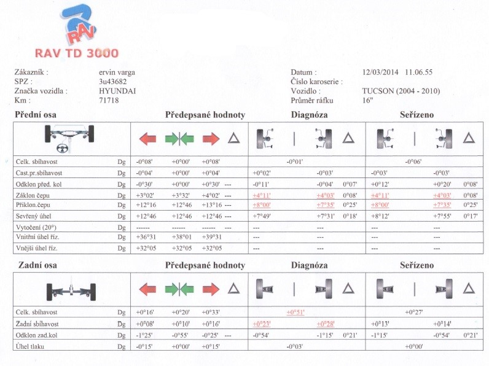

Provádíme profesionální laserové seřízení geometrie kol. Součástí geometrie je i test naměřených hodnot. Měření i seřízení probíhá na nejmodernější přístroji italské značky Ravaglioli pro trojrozměrný systém měření geometrie kol.
Geometrie kol – geometrie 3D
- geometrii seřizujeme i bez objednání
- používáme nejmodernější 3D techniku
- včetně protokolu naměřených hodnot
Pomocí moderní technologie pro měření sbíhavosti kol změříme a případně seřídíme geometrii kol vašeho vozidla.
Správné seřízení geometrie vozu:
- zvýší životnost pneumatik
- zlepší jízdní vlastnosti
- sníží opotřebení podvozku
- sníží spotřebu paliva až o 20%
- zvýší celkovou bezpečnost
Naše vybavení pro měření a seřízení 3D geometrie
Používáme nejmodernější přístroj pro 3D seřizování geometrie náprav. Jedná se o výrobek přední italské značky RAVAGLIOLI.
Tento světový výrobce dodává svá zařízení i dealerům nových vozidel a je v Evropě na špičce ve svém oboru. Nejen kvalitou měření a seřízení, ale i rychlostí, přesností a zásobou potřebných dat pro seřizování. Tato data získáváme přímo od výrobců automobilů.
3D geometrie kol versus optická geometrie
Rozdíl mezi obyčejnou optickou geometrií a 3D geometrií je tak významný, že už ho dnes nikdo nerozporuje. V podstatě se jedná o řádově jinou kvalitu a přesnost měření a v závislosti na tom i seřízení geometrie. Optická geometrie byla dostačující u vozidel koncepčně výrazně starších, maximálně do roku výroby 2000. Od té doby jsou moderní auta vybavována čím dál komplikovanějšími nápravami s mnoha atypickými funkcemi a optimální nastavení jejich podvozků je často velmi složité.
Co je to geometrie řízení?
Geometrie přední nápravy, případně i geometrie zadní nápravy, je konstrukční nastavení podvozku vozidla. Kromě seřízení sbíhavosti přední nápravy, která bývá nejčastějším úkonem při kontrole nastavení podvozku, seřizujeme i záklony rejdového čepu, odklony, zadní nápravu a souosost náprav.
Sbíhavost kol je nutné seřídit v následujících případech:
- při nerovnoměrném sjíždění kol
- po mechanickém nárazu podvozku (na obrubník, větší díru atd.)
- po opravách podvozku
- táhne-li vozidlo ke straně při zrychlení nebo při brzdění
- táhne-li vozidlo ke straně při jízdě po rovině
- pokud je volant nakřivo
- optimálně jedenkrát ročně
- nejlépe po přezutí pneumatik
- vždy po větší nehodě
Kde lze zkontrolovat sbíhavost kol?
- sbíhavost kontroluje autoservis při servisní prohlídce nebo při opravě
- sbíhavost kontroluje autoservis při servisní prohlídce nebo při opravě
- Autoservis Garant měří sbíhavost na počkání
- k měření máme dva nezávislé certifikované přístroje (cejchovaná měřidla)
Celková kontrola vozu a podvozku
Aby šla geometrie řádně seřídit, musí být podvozek v naprostém pořádku i po mechanické stránce. Především nesmí mít nežádoucí vůle. Některé servisy dodnes razí teorii, že geometrii lze dobře seřídit podle metru nebo ručně udělaného přípravku, ale není to pravda. Poznáte to na zhoršených jízdních vlastnostech, vyšší spotřebě nebo rychlejšímu či atypickému sjíždění pneumatik. Stejně tak seřízení geometrie na podvozku s utrhanými silentbloky, vůlemi v ramenou nebo asymetricky sjetými pneumatikami nebude mít valný efekt.
Specialista na podvozky a geometrie
Autoservis Garant je specializovaným servisem na provádění oprav podvozků a geometrií. Jsme autorizovaným servisem Podvozkového centra německých firem APM a Bilstein a konceptu německého výrobce podvozkových dílů ATE Continental. Seřízení geometrie náprav úzce souvisí s technickým stavem vozu, zejména podvozku, proto se jedná o odbornou práci, kterou nelze provádět bez potřebného vybavení a znalostí. Bohužel po českých silnicích stále jezdí automobily, u kterých geometrii buď nikdo neseřizuje nebo ji seřizuje bez potřebného vybavení a bez praktických znalostí.
Kde neprovádět geometrii
Seřízení sbíhavosti nebo celé geometrie dnes nabízejí prakticky všechny autoservisy. Jen zlomek z nich k tomu ale má potřebné vybavení (zejména funkční 3D geometrii, jejíž cena je stále poměrně vysoká) a zkušený personál, který tyto úkony dělá denně a nemusí se to u každého podvozku nejprve naučit. V praxi to u některých servisů probíhá bohužel tak, že Vám někdo geometrii seřídí od oka nebo neseřídí vůbec. Nebo vaše auto převeze k někomu, kdo geometrie seřizuje a nechá to přeúčtovat. Anebo vám udělá půlku opravy a řekne Vám, ať si geometrii někde zařídíte sami. Ve všech případech je to pro klienta velmi nevýhodné a nepraktické.
Geometrie není jen sbíhavost kol
Častým mýtem bývá, že geometrie je seřízení sbíhavosti přední nápravy. To je jen část celkové geometrie. U většiny moderních automobilů se kromě sbíhavosti seřizují čím dál častěji i odklony, záklony, zadní náprava, souběžnost náprav (souosost náprav), světlá výška vozu atd. Vždy záleží na typu nápravy a modelu auta.
Nevíte si rady s nastavením geometrie? Chcete vědět cenu seřízení geometrie? Volejte.
Protokol výsledku měření geometrie
Ke každé geometrii dostanete vytištěný detailní protokol s naměřenými hodnotami.